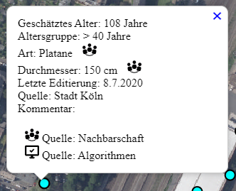

Das zugrunde liegende Baumkataster der Stadt Köln ist ein freier Datensatz (CC BY 3.0 DE) der Stadt vom Juni 2020. Leider ist der Bestand nicht komplett und wichtige Informationen wie etwa das Alter fehlen zum größten Teil. Auch sind bei weitem noch nicht alle Straßenbäume dort eingetragen. Deswegen habt Ihr hier die Möglichkeit neue Bäume anzulegen, Bäume zu editieren und Bäume zu löschen.
Deine Arbeiten stehen dann wieder Allen unter freien Lizenzen zur Verfügung.
Die Daten stehen dann in Echtzeit der Kölner Gieß-App zur Verfügung um die Gießaktivitäten zu Koordinieren. Diese erreicht Ihr mit dem aktuellen Kartenausschnitt über über das folgende Icon rechts oben in der Menüleiste:
Der Datensatz der Stadt wurde durch Algorithmen veredelt, welche das Alter und die Art anhand vorhandener Daten abschätzen: cologne-trees-REST-API
Neben der API existiert auch noch eine schicke graphische Repräsentation der Daten: cologne-tree-map.
Es existieren nur wenige Angaben zum Pflanzjahr im Datensatz, so dass eine Abschätzung anhand anderer Parameter (Nachbarschaft, Gattung, Stammumfang) erfolgen muss. Auch diese sind leider nicht gut gepflegt.
Weiterführende generelle Informationen zur Altersbestimmung von Bäumen sind z.B. bei Axel Rendenbach: Bestimmung des Baumalters Gegenüberstellung verschiedener Bestimmungsmethoden der Praxis zu finden.
Durch das Anklicken oder Antippen eines Baumes öffnen sich die Detailinformationen zu dem Baum:
Stammt der Datensatz aus dem Baukataster der Stadt Köln (Quelle: Stadt Köln) ist Anhand der Icons erkennbar wie diese aufbereitet oder editiert wurden.
In dem Falle, dass kein Icon vorliegt, konnte die Art und das Alter (Pflanzjahr - 10 Jahre) direkt dem Kataster entnommen werden.
Editierungen durch die Nutzer*nnen werden durch das Nachbarschafts Icon angezeigt.
Das Algorithmus Icon zeigt an, dass dieser Datensatz aus den Daten der Stadt abgeleitet wurde.
In der oberen rechten Ecke der Karte befindet isch ein Icon um zwischen der OpenStreetMap Karte und dem Luftbilddienst von Geobasis NRW zu wechseln. Die Luftbilder besitzen eine Auflösung von 10cm und sind recht aktuell (der Aufnahmezyklus wurde ab 2020 auf 2 Jahre verkürzt).

Mittels des Icons lassen sich neue Bäume anlegen:

Es öffnet sich am linken oberen Rand der Karte ein Fenster.

Nachdem der Standort des neuen Baumes durch einen Klick in die Karte definiert wurde, können über den Button "weiter" dessen Attribute eingegeben werden.
Die Baumart könnt Ihr durch Anklicken des Auswahlfeldes auswählen, oder durch Texteingabe zunächst einschränken.

Sollte die gewünschte Baumart nicht verfügbar sein, bitte eine kurze Mail schreiben, am besten direkt mit der Gattungungsnamen.
Wenn in dem Auswahlblock "Alter abschätzen" eine konkrete Altersangabe erfolgt ist diese führend. Ansonsten wird das Alter aus dem Umfang (bzw. Durchmesser) und falls verfügbar dem Gattunsgnamen abgeschätzt (s.o. Axel Rendenbach: Bestimmung des Baumalters...).
Alle Angaben sind optional, nur die Lizenzbedingungen müssen akzeptiert werden. Die Doppellizensierung ist notwendig um die unterschiedliche Rechtssprechung zu berücksichtigen. Haftungsausschlussklauseln wie in der ODC PDDL sind im europäischen Rechtsraum so nicht gültig, siehe Datenlizenzen für Open Government Data - Rechtliches Kurzgutachten.
Die Attribute bleiben beim Erstellen des nächsten Baumes erhalten. Können aber über den Button "Alles zurücksetzen" wieder entfernt werden.
Mittels des Icons lassen sich neue Bäume editieren:

Es öffnet sich am linken oberen Rand der Karte ein Fenster.

Nachdem Ihr auf einen Baum in der Karte geklickt habt könnt Ihr dessen Attribute editieren.
Mittels des Icons lassen sich Bäume löschen:

Die Daten der gelöschten Bäume werden in einer separaten Tabelle gespeichert und sind nicht verloren.
Mittels des Icons könnt Ihr auf Euren aktuellen Standort zoomen:

Oft ist es im Feld gar nicht so einfach den Überblick zu behalten. Hiermit könnt Ihr auf Euren aktuellen Standort zoomen, sofern Ihr vorher der Anwendung dies erlaubt habt. Das GPS hat allerdings so seine Einschränkungen, besonders in Häuserschluchten. Erwartet daher keine exakte Lokalisierung.
CodeForCologne oder OK Lab Köln ist eine regionale Gruppe von Designern, Entwicklerinnen, Journalisten und Anderen, die sich regelmäßig treffen, um an nützlichen Anwendungen rund um Offene Daten zu arbeiten. Unser Treffen findet alle zwei Wochen statt. Schaut einfach in unserer gettogether.community Gruppe vorbei!

Die Daten werden täglich um 7:00 aufbereitet, und stehen als gezipptes Geojson zur Verfügung.
Lizenzbedingungen:Verantwortlich für diesen Webauftritt ist:
Martin Over,
c/o OK Lab Köln,
Hackländerstraße 2,
50825 Köln,
contact(at)OpenDEMData.info
Die Inhalte unserer Seiten wurden mit größter Sorgfalt erstellt. Für die Richtigkeit, Vollständigkeit und Aktualität der Inhalte können wir jedoch keine Gewähr übernehmen. Als Diensteanbieter sind wir gemäß § 7 Abs.1 TMG für eigene Inhalte auf diesen Seiten nach den allgemeinen Gesetzen verantwortlich. Nach § 8 bis 10 TMG sind wir als Diensteanbieter jedoch nicht verpflichtet, übermittelte oder gespeicherte fremde Informationen zu überwachen oder nach Umständen zu forschen, die auf eine rechtswidrige Tätigkeit hinweisen. Verpflichtungen zur Entfernung oder Sperrung der Nutzung von Informationen nach den allgemeinen Gesetzen bleiben hiervon unberührt. Eine diesbezügliche Haftung ist jedoch erst ab dem Zeitpunkt der Kenntnis einer konkreten Rechtsverletzung möglich. Bei Bekanntwerden von entsprechenden Rechtsverletzungen werden wir diese Inhalte umgehend entfernen.
Unser Angebot enthält Links zu externen Webseiten Dritter, auf deren Inhalte wir keinen Einfluss haben. Deshalb können wir für diese fremden Inhalte auch keine Gewähr übernehmen. Für die Inhalte der verlinkten Seiten ist stets der jeweilige Anbieter oder Betreiber der Seiten verantwortlich. Die verlinkten Seiten wurden zum Zeitpunkt der Verlinkung auf mögliche Rechtsverstöße überprüft. Rechtswidrige Inhalte waren zum Zeitpunkt der Verlinkung nicht erkennbar. Eine permanente inhaltliche Kontrolle der verlinkten Seiten ist jedoch ohne konkrete Anhaltspunkte
Bei jedem Zugriff auf Inhalte des Internetangebotes werden dort vorübergehend Daten über sogenannte Protokoll- oder Log-Dateien gespeichert, die möglicherweise eine Identifizierung zulassen. Die folgenden Daten werden hierbei erhoben:
Rechtsgrundlage für die vorübergehende Speicherung der Daten ist Art. 6 Abs. 1 lit. e DS-GVO i.V.m. § 3 Abs. 1 NRWDSAnpUG-EU.
Die Daten aus den Protokoll- bzw. Logdateien dienen zur Sicherstellung der Funktionsfähigkeit der Website. Zudem dienen sie zur Abwehr und Analyse von Angriffen. In diesen Zwecken liegt auch unser berechtigtes Interesse an der Datenverarbeitung.
Die Daten werden bis zu einer Woche direkt und ausschließlich für Administratoren zugänglich aufbewahrt. Mit dem Hoster des Serverswurde ein entsprechender Vertrag zur Auftragsverarbeitung (AVV) geschlossen. Es handelt sich um einen deutschen Serverstandort
Die hier gezeigten Hintergrundkarten kommen von:
www.openstreetmap.org www.openstreetmap.orgDas Werkzeug Icons wurde erstellt von: SVG Repo
Das Weltkugel Loading Icon wurde erstellt von: loading.io Bitte die Lizenzbedingungen beachten
Das Gießkannen Favicon & Icon wurde erstellt von: freefavicon.com Bitte die Lizenzbedingungen beachten
Das #GießtKoelle Logo hat ein Copyright
Alle Angaben sind optional. Wat kütt, dat kütt. Irgendeine Angabe zur Altersabschätzung wäre Klasse.
Alter abschätzen:
ungefähre Altersklasse [Jahren]:
Länge:
Breite:
Alter abschätzen:
ungefähre Altersklasse [Jahren]:
 Quelle: Nachbarschaft
Quelle: Nachbarschaft
 Quelle: Algorithmen
Quelle: Algorithmen
Baumart: